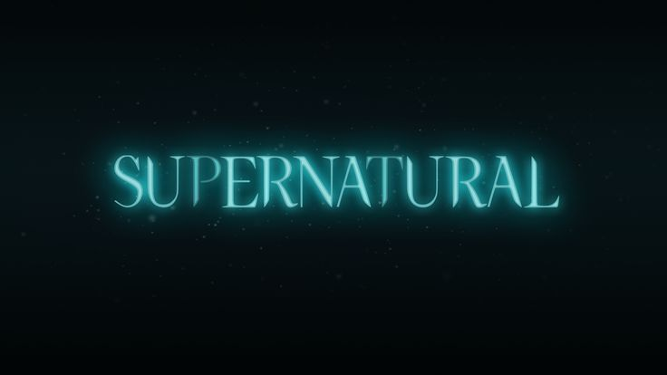

Seasons
First Season

The series follows two brothers, ghost hunters, who travel across the United States in a black 1967 Chevrolet Impala, investigating paranormal occurences, many of which are based on urban legends and folklore, and fighting the creatures of evil: demons, ghosts, and other evil spirits.
Second Season
The second season tells about the Winchesters' search for the demon Azazel, who killed their parents and Sam's girlfriend. Also in this season, new allies appear: Ellen and Jo Harvelle, Ash. The latter helped find the demon.
Third Season
The worst enemy of the human race and the Winchester family in particular, Azazel, is killed. But the gates of hell were open for some time and the show called "Apocalypse" has already begun - hundreds of demons have broken free, and a serious threat hangs over the world.